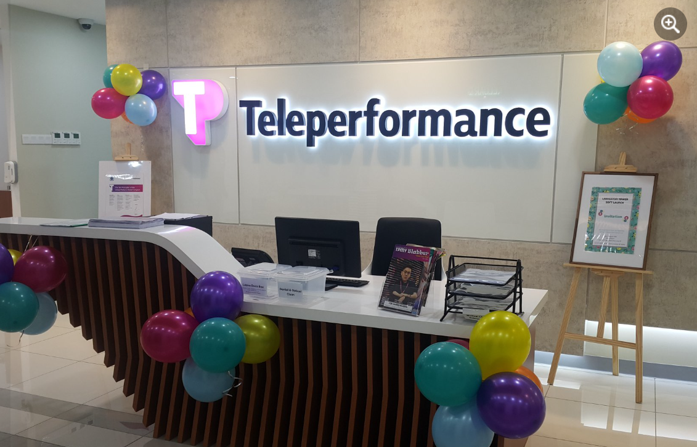
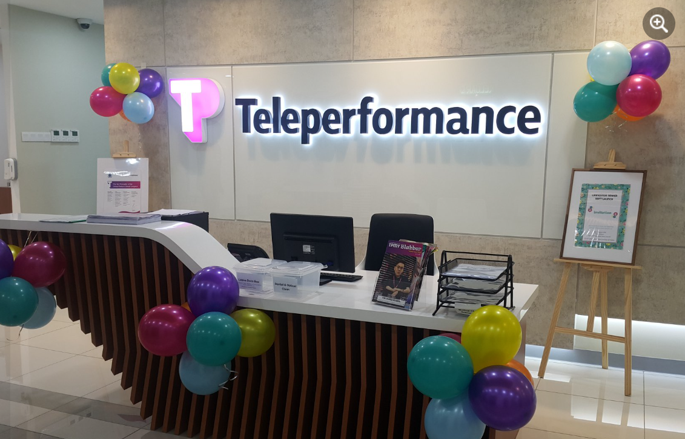

Joseph（ジョセフ）
こんにちは。TP Malaysiaで日本語スピーカーをはじめとした多国籍人材の採用を担当している、シニアマネージャーのジョセフです。これまで約14年にわたり、APAC地域を中心に人材採用の業務に携わってきました。IT、ロジスティクス、半導体、ITインフラなどの業界において、エンジニアやサポート職からマネジメント、Cレベルまで幅広く担当。日本、マレーシア、シンガポール、タイ、韓国、オーストラリア、ニュージーランドなど複数国をまたぐ採用プロジェクトの経験を活かし、常に「一人ひとりに寄り添う採用」を大切にしています。
🌴 プライベートでは、スキューバダイビングとゴルフが趣味です。マレーシアではこれらをリーズナブルに楽しめ、生活のクオリティも高いと感じています！
✉️ 候補者の皆さまへ： 海外転職は大きなチャレンジであると同時に、新しい可能性を広げる素晴らしい機会です。選考プロセスや現地の生活についても、できる限り分かりやすくご案内し、安心してご応募いただけるよう心がけています。


 
